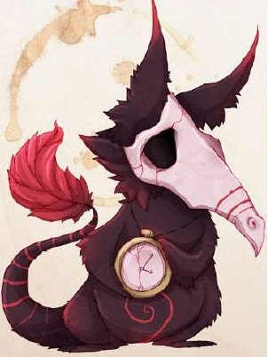
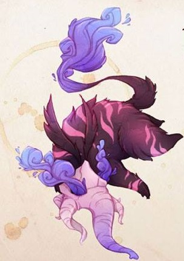
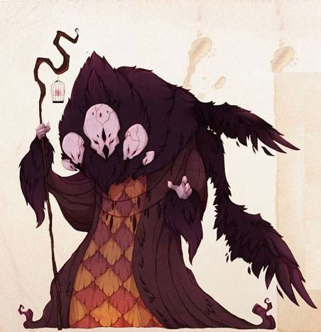

LAS ENFERMEDADES MENTALES SON:
Afecciones que impactan tus pensamientos, sentimientos, estados de ánimoy comportamiento. Pueden ser ocasionales o duraderas (crónicas). Pueden afectar tu capacidad de relacionarte con los demás y funcionar cada día.
ALGUNAS DE LAS ENFERMEDADES MENTALES MÁS COMUNES SON :

ANSIEDAD
El monstruo de la ansiedad es pequeño para poder sentarse en los hombros de su víctima y susrrarle cosas a su inconsciente, provocándole pensamientos de miedo y preocupaciones irracionales.

DESORDEN DEL SUEÑO
Este monstruo es una criatura juguetona que nunca descansa. Tratará de buscar un compañero de juegos en medio de la noche y mantenerlo despierto para saciar su eterno aburrimiento. Muy a menudo, la víctima dormirá poco o nada, estresándose y fomentando que otros monstruos al del desorden del sueño en sus juegos.

DEPRESIÓN
more_vertDEPRESIÓN
closeEl monstruo de la depresión ronda sin fin, simpre cubriendo sus ojos para esconderse del mundo exterior. Por eso se tropieza con la gente o con otros monstruos, provocándose cada vez más angustia.
